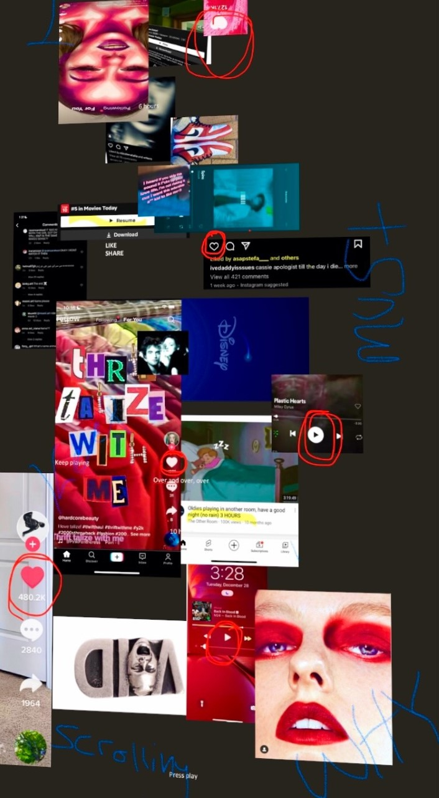

Second Draft
This was my second mock up based off of my first poster.

Because I based this off of my first draft I had only changed a few things like the center that was more clear and the less blured background that made it harder to see.